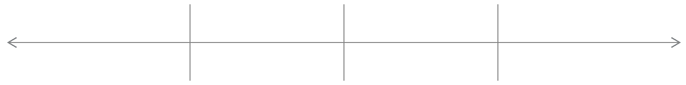
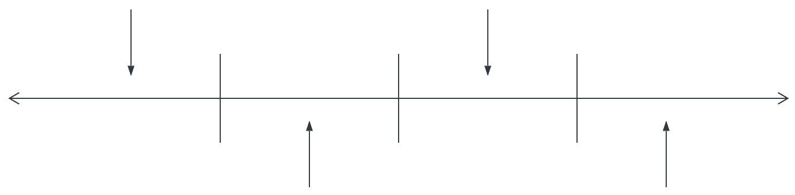

{% extends 'base.html' %}
{% block content %}

<div class="main-title">
    <!-- <h1>Destinations In Time</h1> -->
    <!-- title being moved to navbar, eventually -->
</div>
<div class="title text-center">
    <h2>Where In Time Would You Like To Travel?</h2>
</div>

<!-- TODO: refactor lower row to be same as upper -->

<section class="container-fluid margin-auto text-center">
    <div class="row align-items-end ">
        <div class="col-2 offset-2 Ancient">
            <a href="#"><h3>The Ancient World</h3></a>
            
        </div>
        <div class="col-2 Medieval">
            <!-- <p>img placeholder Ancient</p> -->
            
        </div>
        <div class="col-2 Renaissance">
            <a href="#"><h3>The Renaissance</h3></a>
            
        </div>
        <div class="col-2 Early">
            <!-- <p>img placeholder Early Modern</p> -->
            
        </div>
    </div>
    <div class="row">
        <div class="col align-self-center">
            
            <!--  -->
        </div>
    </div>

    </div>
    <div class="row">
        <div class="col Ancient">
            <!-- <p>img placeholder Ancient</p> -->
            
        </div>
        <div class="col Medieval">
            
            <a href="#"><h3>The Medieval Age</h3></a>
        </div>
        <div class="col Renaissance">
            <!-- <p>img placeholder Renaissance</p> -->
            
        </div>
        <div class="col Early">
            
            <a href="#"><h3>The Early Modern Period</h3></a>
        </div>
    </div>
</section>


{% endblock %}